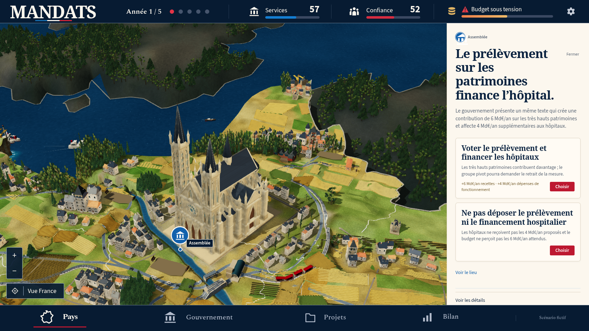
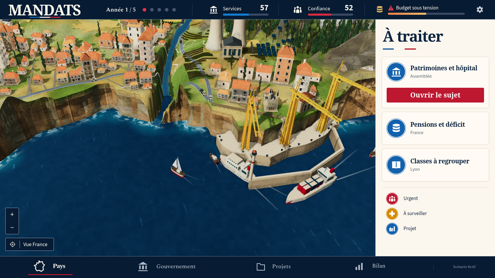
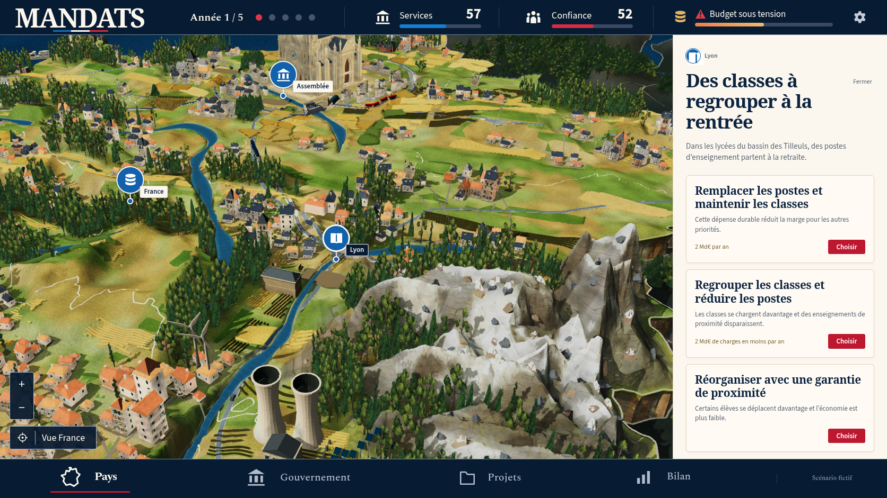
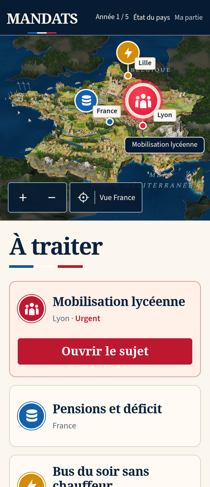
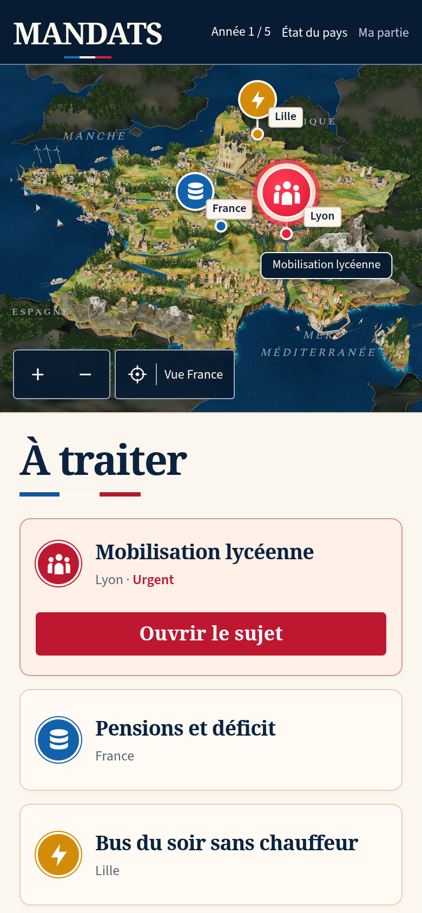

MANDATS — comparaison 45
La miniature reste en dessous de la référence. La reconstruction et les contrôles complets continuent. La PR reste en brouillon.
La capture de jeu montre une véritable décision scolaire : année 1, services 53, confiance 52 et mobilisation lycéenne. Le scénario fictif de la référence n’a pas été injecté dans la partie.
Comparaison des deux compositions entières, sans recadrage ni retouche.
Référence canonique.Production 45, obtenue avec les contrôles du jeu.
| Partie | Modification réelle | Écart encore visible |
|---|
| Cathédrale | Rosace, fronton, tours et chapelles avec des ouvertures réelles. Cadres des petites lancettes réduits. Source, UV et textures recuits ensemble ; deux exports répétés identiques. | La densité architecturale et la patine des bourgs restent moins riches que dans la référence. |
| Bois et monuments | Garde commun aux emprises réelles des quatre grands monuments. Quinze monuments contrôlés dans la scène entière ; aucun recouvrement horizontal de canopée relevé. | Les masses boisées demandent encore une comparaison de détail avec le relief repris. |
| Relief et rivages | Index de faces accéléré avec les mêmes valeurs contrôlées ; terrain exporté inchangé. Les cent éclats rocheux contrôlés restent enfoncés dans les faces rendues. | Alpes trop larges, falaises régulières, embouchure méditerranéenne encaissée, Corse étroite et arrière-plan lisse. |

Assemblée puis « Voir le lieu ». Les vitrages corrigés sont visibles ; les volumes et la patine des bourgs restent à enrichir.
Déplacement natif et zoom vers le rivage sud. Le contact entre le fleuve, la falaise et la mer reste à corriger.
Inspection de Lyon puis un clic sur « Réduire la carte ». La géométrie rocheuse et l’enneigement restent moins fins que la référence.

320 × 740, DPR 2, framebuffer 640 × 562 ; véritable choix scolaire.
390 × 844, DPR 2, framebuffer 780 × 642. Aucun débordement horizontal.Preuves et limites
Dix captures natives de production contrôlent zéro erreur de page, de console, de requête et HTTP. Leurs réponses JS/CSS correspondent au build conservé. Les contrôles du jeu seuls déplacent la caméra et déclenchent une vraie mobilisation. Aucun état, modèle ou choix de détail n’est forcé. Deux fabrications du terrain et deux exports du GLB végétal sont identiques octet par octet ; les neuf textures du générateur sont reproduites.
Le check complet passe 1 082 vérifications, les trois cibles TypeScript, le build, le pré-rendu et le précache de 150 ressources. Le contrôle original ciblé de DPR WebKit passe le redimensionnement, une décision et sa reprise, en 44,3 secondes avec les délais inchangés. La suite 3D originale complète passe 23 cas actifs avec neuf omissions configurées, sans échec ni test instable, en 19 minutes. La suite sociale originale complète passe 13 cas actifs avec ses trois omissions configurées, sans échec ni test instable, en 12,2 minutes. Les deux parcours originaux ciblés de nouvelle partie WebKit passent également, en portrait et en paysage. Aucun test, délai, retry, worker ou omission n’a été modifié.
Les dix captures natives correspondent aux fichiers réellement servis du build figé. Les listes d’erreurs de page, console et HTTP sont vides. Le modèle comporte 81 012 triangles détaillés et 4 141 distants, avec des attributs finis et des normales unitaires ; les deux exports ne contiennent aucun triangle dégénéré ni désaccord de normale. Les 35 rayons contrôlés atteignent le verre puis des texels bleus dans les deux géométries exportées. Ces contrôles d’auteur ne remplacent pas l’inspection native ou la conformité artistique.
L’index conserve exactement les hauteurs, bandes, pentes et normales sur 964 613 points contrôlés dans les quatre relevés de roches. Les mesures Node sont des mesures d’auteur ; elles ne certifient pas la fluidité d’un téléphone. La CI du commit précédent aedc937 conserve des échecs de chargement et de nouvelle partie sur plusieurs formats. Ses rapports restent distincts des résultats locaux de cette passe.
Manifeste · Captures natives · Build · Appuis des éclats · Monuments et canopées · CI précédente · Géométrie et vitrages · Relevés du relief